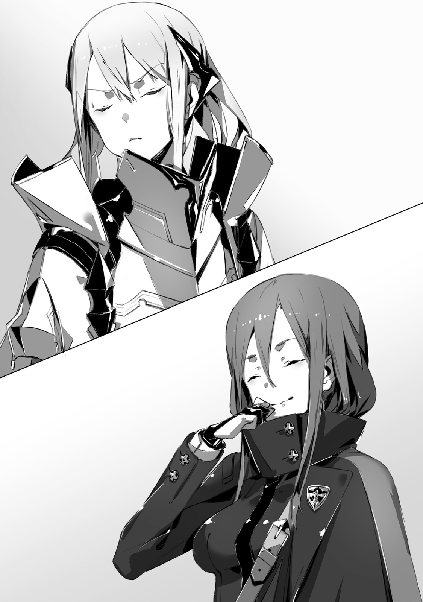

"Kai...Kai, Kai, where are you!?"
Government Palace. In heart of vast Urza Federation, stood twin tower, which was symbol of capital. There on first floor, could be heard lovely female voice.
"Kai...?"
"You don't need to shout so much, I'm here."
There, in front of elevator on first floor, which hasn't been used for last 30 years, was young man who was working on cleaning it out of dust and fixing cables. Stopping his repairs, Kai wiped sweat from his forehead with his hand. His name was Kai Sakuravent. It was 17 years old young man whose hair and eyes had colour of dark ultramarine. He was wearing MDA uniform, which was mass-produced uniform for anti four races activities. Results of daily training were clearly visible on his body.
"What is it, Rinne?"
"! Ah, you're here Kai...!"
Seeing him, blond hair girl expression immediately became brighter. Her name was Rinne. She had pair of jade green eyes, and her pale golden hair shook as she run. Her flustered cheeks added even more charm to her lovely features. Although she was quite slender, her chest gave off feminine allure. And her waist curves were clearly visible in these thing clothes. From her outward appearance she looked like 16 years old girl. But her actual age wasn't known even to Rinne herself. This young lady had mixed blood of all other races. And now this girl, raised overhead the towel that she supposed to use to wipe windows.
"Kai, big trouble! Really big trouble!"
"Eh? I'm certain you were only asked to help with some cleaning."
"Yeah, that's right! Come, come here!"
Rinne pulled her hand with towel behind. And there Kai could see cracks on window. Total of four cracks looked like a spider web.
"Oh, is it broken? How strange, I'm pretty sure we replaced it with new."
"It is already been broken when I was planning to wipe it clean."
"...I see."
Kai looked at towel that Rinne was holding, and then at cracked window.
"It seems there are drops of water on glass, as if left by towel."
"Ah!?"
Blond girl made small scream and put behind the towel.
"It-t is not me, you know? I'm not the one who broke glass."
"...So you put too much force when you tried to wipe window?"
Rinne was mixed of multiple races. Thanks to her dragon and beast ancestry, despite her delicate appearance, she had so much physical strength, that one would wonder just from where these slender arms could draw it. And since she is not used to the job, it is quite possible for her to break glass by mistake. While Kai was thinking so...
"N-no..."
Rinne shook her head horizontally over and over again.
"When I came here it is already been broke. I'm sure that culprit is someone among Resistance soldiers. These humans, cleaning there, are likely to be the one at fault."
"Got it, I believe you, Rinne."
"Kai! Thank you!"
"By the way, Rinne, when glass broke it didn't injury you? It would be bad if some fragments would sunk in."
"It is all right, instance it broke, I pulled my hand away... Ah..."
"I see, so you broke it."
Before Kai who was nodding, Rinne smile instantly froze.
"Rinne."
"..."
She just looked at him with upturned eyes, as if wanting to say something. But in the middle of it she swallowed her breath. And finally she replied.

"...I'm sorry."
"As long as you understand."
"...Hey, Kai? You're angry?"
"Hm... Let's see."
"...A-after all you're angry, right?"
"Since you honestly apologized, this time I'm not."
"! As expected, I like you Kai!"
Kai made strained smile seeing Rinne jumping from happiness. Losing window like that is certainly wasteful, but he couldn't bring himself to seriously scold her. Thanks to Kai and Rinne they were able to retake Government Palace from demons. Seven days ago... Here was fight against demons in order to take it back, and deadly battle against Dark Empress Vanessa. If it wouldn't be for Rinne's strength, they'd be unlikely to accomplish their goals
"I'm going to tell Jeanne. Pretty sure we should have some spare glass for window."
"Jeannya?"
"It is Jeanne. Rinne, wanna come with me?"
"Nope, don't wanna. In that conference room is too many humans. Here first floor is big so it is less crowded with humans. I'm fine here."
Rinne was frowning. Being different from other races, she had past of being oppressed by all races, including humans. Other than Kai, who was special to her as he saved her, she had hard time dealing with humans. She had wings that was mix of angel's and demon's. Under her golder hair pointy elven ears were hidden. Even though she could hide her wings under clothes, if someone aside from Kai would see it, that would cause uproar.
"Got it, I'll go find Jeanne, you can rest here."
"Yes!"
"While I'm away I prohibit you to break stuff."
"Yup, if Kai says so, I'm not going to."
One could only wonder what would happen if he didn't say so. And while Kai imagined what would happen, Rinne smiled and just looked at him. But against her lovely and pure smile, Kai had no chance to win.
"Have a nice trip."
"I'll be back soon."
Kai turned away from Rinne. He decided to use elevator, which he just fixed, and go to 10th floor.
"It works... But, well, after all I cannot get used to it. Am I just happy that a single elevator finally works? The world I'm in right now..."
While riding elevator, Kai leaned against cold wall and was looking at ceiling.
"...I'm going to return make it as the world I remember. In your place, Sid."
One day, World [Overwrite] happened. Before young man eyes the world history has been overwritten by [World Reincarnation] Just like abound hundred years ago, the history of Kai's world repeats itself in deadly conflict for hegemony among five races. Five Races Great War. In this war hero Sid led humanity to victory. As four other races were crushed, humanity sealed them away in remote regions. Or at least that's what supposed to be.
Hero [Dark Empress] Vanessa who leads, demon race, wielders of powerful magic.
Hero [Heaven Lord] Alfreyja who leads foreign gods, composed of angels and elves.
Hero [Spirit Sovereign] Rikugen Kyouko who leads spirits, very peculiar creatures like ghosts.
Hero [Fag King] Rath=IE who leads cryptids, gigantic and ferocious beasts.
But... This history vanished. Instead it is now history with reverse ending: World has been overwritten with different history of [Humanity being defeated in Great War]. And Kai was the sole human who remembered the instance when [World Reincarnation] happened.
Only me and Rinne remembers actual history.
And no one else remembers true history.
The humanity hero Sid, who lead humanity, no longer exists in this different world. And therefore humanity lost to four other races. This is current situation of this world.
"What I'm saying, after all first of all I need take care about my own situation, I'm not the one to say how awful humanity as the whole situation."
TL Note: This one is a bit hard for me to understand なんて。俺だってホントは自分のことで精一杯で、人類全体の状況がどうかなんて大それたこと言える身じゃないんだろうけどさ
Young man who has been forgotten by world... Just like hero in this overwritten world, Kai no longer existed. Whereabouts of both his parents and relatives were unclear. And both old colleagues and higher-ups no longer remember Kai. If there would be one positive thing to say about current situation - it is that Kai and Rinne helped to take back capital from demons As result, it earned trust of local Urza Resistance soldiers. And above all it brought him opportunity to be in contact with their leader Jeanne.
"Still how strange it is... In this world the girl, with whom I played since early childhood, is treated as saviour of this federation."
"...Kai?"
Elevator stopped. As doors opened, before his eyes was knight in silver armour, who disguised herself as man. Leader of Urza Resistance Army Jeanne. Graceful and gallant facial features gave strong androgynous charm.
"What is it, Kai? It is quite unusual for you to come to 10th floor."
"Good, Jeanne, I have a talk, or maybe request or apology to make."
"To me?"
Behind here were two people. Both were captains and strong-looking, and stopped alongside Jeanne before the elevator.
"We broke window on first floor. Sorry about that."
"...Again?"
"Again?"
"It is anyway Rinne fault again, not yours, right? Didn't you hear how angry was one of the captains due to broken lighting in hall?"
"No... First time hearing about it..."
The only thing that Kai knew, is that Rinne was supposed to help with changing ceiling lights. He didn't hear about any problems.
"That Rinne... She doesn't like scolding from me, so she hid the fact."
"She seems to reflect after being scolded by the captain. If you're going to scold her, do it in moderation. She is key figure in defeating Dark Empress after all. Would be bad if she'd start sulking."
Seeing Jeanne's faint smile, reminded him...
"Kai, you're the only one who played with me since our childhood. And even now you're walking by my side."
"Could it be... Can I have high hopes then?"
It suddenly overlapped with the image of her he saw last time. At the time when they were shopping and walking across road intersection. And that instance world has been overwritten by World Reincarnation. Current Jeanne no longer remembers her childhood friend.
"Kai?"
"Ah, sorry, I hear you."
Hearing his name, made Kai come back to his senses. Right now Jeanne is leader of Resistance Army and dress like a man knight who is praised by Urza Federation citizens as [Light Knight]
Using tanning make-up, she adds more masculine look.
And with that armour she hides her figure.
She strains her throat to make a more boyish voice, and since her hair is too long for man, she ties it behind. From point of view of Kai her disguise was perfect. Image of young man as beautiful as girl, suited well for her commanding role.
TL Note: There is general trend among japanese devs/writers to make girls fair skinned, while guys are all tanned. Especially in VN.
"Anyway, about glass which was broken by Rinne."
"We'll replace it later. Today and tomorrow my and my subordinates are already busy. You should keep company to Rinne and do not take off your eyes from her."
"Got it. We should prevent further victims among glasses."
"I'll be relying on you. In any case..."
Jeanne directs her gaze toward window. Out there was clear sky. Just seven days before this blue sky was covered by winged demons.
"We finally took back capital. I want to finish relocation of our headquarters as soon as possible. And make this Government Palace new base of Urza Resistance."
"People are going to migrate here too I guess?"
"...It would be pre-mature."
Husky voice could be heard together with sound of footsteps. Stopping to bow before Jeanne, female staff gracefully turned towards him. Security chief, Fairin, who also follows Jeanne as her bodyguard. Her age is in mid twenties. Her beautiful face featured pair of cold grey eyes. Being on par with man's height, her whole body looked well trained. Despite that she didn't looked even a bit sluggish, which made her look like a female leopard.
"People of this Federation lost their land at hands of demon forces. Since then they escaped to live underground or in ruins."
"...Yeah."
While Fairin was stating obvious thing, for Kai this was quite abnormal [common sense]. In this Urza Federation humans lost in Great War against demons. And since then they hid in so-called Human Cities in order to live.
And this is world-wide phenomena.
Not only demons, but also foreign gods, cryptids and even spirits took away human cities.
But with defeat of demon hero Vanessa situation changed. Now, demons are escaping from this capital.
"Defeating Dark Empress is immeasurable feat for sure. But demon numbers are enormous."
"...Right."
It is said that demon population is largest after humans. And being wary of possible retaliation is quite valid concern.
"Demons withdrawal is confirmed only here?"
"Right. And migration here would be also difficult for people. As you could see, most of buildings are in ruins."
Female bodyguard points at window. The standing buildings are for the most party heavily damaged. Since the time when demon attacked 30 years ago, its remained like that.
"Besides it is been only week."
Fairin shrugged her shoulders.
"So there are many who in doubts about demon withdrawal. And what's more for last 30 years, they grew fond of their Human cities."
"Ah, I see..."
Such idea, growing attached to these places, seemed unthinkable to Kai. In true world, living in city was only natural. Yet here in this world as far as most people were concerned, Human cities were enough.
TL Note: I avoided using term Human City/Human Ward because it sounds weird, but this is what author uses when refering to underground cities where humans hide. jp. 人類特区, firugana: ヒユーマンシテイ
"Unless demons will not be completely eliminated from Urza Federation, humanity cannot return back to surface. And thus Jeanne-sama..."
Fairin made signal with her eyes.
"It is time for meeting. We should head to council room."
"Yes, I was heading there."
Together with Fairin Jeanne headed there. But, as if some idea suddenly came to her, she turned back.
"Kai, could make sure to have free time at evening. Together with Rinne."
"Is it about expedition?"
"Yeah, as we're dealing with relocation of headquarters, we're discussing it with Fairin. I'd like to hear your opinion too."
Together with Fairin and two captains, Jeanne headed out.
"...Well, I guess I'll keep company to Rinne."
He headed for first floor via elevator again. Most likely she would waiting at lobby, or so he thought. But when door opened, there was no sign of Rinne.
"Huh, hey, Rinne?"
He walked around first floor. Around were only Resistance soldiers. But it wasn't easy to just talk with them because they were busy with headquarters relocation, and carried equipment and luggage.
"Did she get tired of waiting and decided to hide? In such big building I will not find her even after spending the whole day. Hey, Rinne, where are you?"
Despite calling her name there was no response. Normally she would come running after few seconds, but now that she not it felt very strange.
"If she just went to take a nap somewhere then it is fine."
She always said that she'll be together with him... And now that she is nowhere to be found, he was worried.
"Rinne? Rinne!"
"..."
"Oh, so you've been here?"
Entrance to Urza Government Palace. As he step out of steel doors, he saw Rinne there.
Her light golden hair was waving under winds, and she was gazing towards group of building. And as Kai came out...
"I smell it in air."
As her profile became visible, Rinne muttered.
"Listen, Kai, I feel like this small is different."
"Hm? Did you want to have a fresh air outside? Air inside of building might be bad."
"Nope."
Rinne pointed at shadow that lie deep in ruins.
"I felt demons, its smell even reached this building, so I came outside."
"...What?"
Few days after demons left capital, Urza Resistance soldiers stopped their patrols and only Kai with Rinne were checking surroundings.
She felt demons?
And it is even close to Government Palace!?
Just seven days ago this place belonged to Dark Empress Vanessa. The only reason he could think of was revenge. Vanessa's subordinates could be creeping around in order to re-take Government Palace.
"Rinne, do you know their numbers?"
"I'm not sure exactly, but it is quite weak smell so I don't think there is many."
"If not many..."
"About four or five. Definitely not even close to 10."
"Then they are scouts."
The attack at Neo Vishal started with demon scouts stumbling upon its entrance after all. So it could be similar scout party of demons.
"Well as one would expect we cannot just leave it as it is. What are we going to do, Rinne? We could talk with Resistance soldiers..."
"Nope, no need."
She gave immediate response. Her reply might be too blunt, but it was within Kai's expectations.
"I'm strong, if Kai is with me, then everything will be fine."
TL Note: I had deja vu just now.
"...Got it, I trust you."
Being chaos kin, there was no doubt that she is strong According to her [it would be difficult to fight four heroes], but she can fight any other opponent. And Kai was able to ascertain it after fight with Dark Empress Vanessa.
"Kai, it is coming from direction of that building."
"Wait a bit, if I'll not report it before, Jeanne will be angry later on."
He took communication device out of his pocket. It wasn't the one he got from MDA in true world, instead he borrowed one from Urza Resistance.
"Ashlan."
[...Ah, Kai? What is it?]
"Where are you now?"
[I'm still at the same place since morning. Cleaning up storehouse at third floor. Since it hasn't been used for 30 years, it gathered quite a lot of dust. Yuck, there is even spiders...!]
On the line was Ashlan Highrol. He is young man who was his comrade in true world. In this world he forgot Kai, but as Ashlan is quite easy-going, it didn't took long for them to become friends.
[You're been busy there? If something happened, you can ask, I can spare some time.]
"Twenty seconds would be enough."
He exchanged glances with Rinne.
"At seven o'clock from the palace, we spotted demons scouts."
[Ah, ok, do your best...! Hey, W-wait...!]
"If we'll bring too many people, we'll get spotted. So Rinne and me will check it out."
[Heeeeeeeeeeeeeey!?]
He cut off power. With that Ashlan no longer will be able to contact him. As he is going to approach demons, it might be possible that device would ring with sound.
"That building? The one with its upper half broken."
"Yup, on its other side."
Rinne walked on cracked road. In past when demon attacked they damaged lots of roads, and now weed was coming out of cracks. There was hole in road which became swamp, with a lots of unknown insects flying around. This is current capital, result of demon dominance.
I suspect it is not the only place.
Other cities which were taken by other races most likely would end up in similar state.
As Kai was walking side by side with Rinne, he took out bayonet out of his metal case on shoulder. It was general purpose assault bayonet [Drake Nail] Developed as anti four races weapon with cryptids motif.
"Hey, Kai, can I stop hiding my wings?"
"Be patient for now. Who knows who among Resistance could be looking here."
"Magic too?"
"Even if we find demons, keep it until last moment."
They need to determine the reason why demons hid in capital. If they were preparing for attack, then he would need to notify Jeanne in order for Resistance Army to start preparations. But even still, deep inside he had some questions.
[It is worthy of a praise.]
[This is my loss. I give you my domain.]
These were Dark Empress Vanessa words towards Kai. These words were stating her defeat and will to leave capital. Despite that. Could it be that these demons faked following Vanessa's order.
"Rinne, we did look around here yesterday, right?"
"Yup, yesterday it didn't reek of demons, I did check it."
Rinne was quietly jumping over rubble around. This agility she displayed was like that of cat beastman, which was most likely cryptids heritage. As they reached the building where from demon smell was coming, Rinne stopped and started looking around.
"...The smell disappeared."
"Is it wind?"
"Nope, it is not like that... This is weird!"
Rinne picked her pace and went to other side of building. Surrounding buildings was shadowing the building, and then he looked upwards.
"...!"
Immediately, tenma wings jumped out of her back. At their roots, these wings were jet-black like crow feather. But closer to edges it was pure white. And these wings, which was mix of both angel and demon, were fully expanded. Kai immediately understood the meaning of it. She was preparing for battle. And it also shown that the battle will require her full strength.
"...There is strong magic power! It is bad, don't come here, that's a trap!"
"What!?"
From crack in ground dark coloured light arose. With the sound of heavy run, the black dome covers the whole building. It was barrier. Dark dome completely closed off, before Kai and Rinne could even escape.
"That's demon's barrier!"
It was thin wall of dark light. From within nothing could be seen, and even sunlight couldn't reach this place. It was like the whole place became a different dimension.
"Such barrier..."
"Rinne, stop!"
As soon as Rinne hand reaches the barrier, the instance her delicate fingers reaches it. Light, resembling lighting, like a snake strikes Rinne. Repelling light. Her fingers were burnt, and from her hands blood was flowing.
"It is painful..."
With a grimace full of pain, winged girl looked up. Three figures were standing there on build. She clenched her teeth.
"Oh, what a scary face. But now you can partly understand it."

TL Note: From manga
The sound of spreading wings could be heard. With a calm smile, single succubus descended from building. Outside she looked like 15 or 16 years old girl. She had golden pupils and her hair had azure colour. She had slim, but very bewitching figure, fitting to a succubus. And her light dress exposed a lot of it. Then her smile instantly turned into fury.
"I found you, human! YOU...The one who took down Vanessa-nee-sama!"
Succubus whole body was emitting black aura. It was fierce torrent of power. As she went down, the road itself was lifted, and wreckage around was smashed into pieces. At the same time cold sweat run through Kai's body. He knew this fierce bloodlust.
This magic power!?
How is this possible... that's unusual power!
This was the same pressure as he felt when he fought Vanessa. And this succubus sprung into action towards them.
"I will butcher you, human!!!!!!!!!!!!"
"Code Holder!"
He called hero Sid's sword. And in response to Kai's word, his Drake Nail transformed into shining sword in the blink of eye. It was his trump against Vanessa. His instincts were telling him that hesitation would lead to his death, so he summoned the sword immediately.
"Human!!!!!"
"Come!"
"...Just kidding!"
TL Note: Didn't see that coming!
All of the sudden she folded her wings. The magic power that was overflowing out of her bewitching body calmed down. And it took only a few seconds for situation within barrier to calm down.
"Oh, could you not make such scary face, human?"
"...What is meaning of this?"
"I'm meaning to self-introduce myself."
Her lips, which were covered by black lipstick, formed a smile.
"I'm succubus Hinemarill, I heard that some human defeated Vanessa-onee-sama, so I was curious to see what kind of human you're."
"..."
"Do you understand what I mean?"
"...I understand for the most part."
She appeared to introduce herself to the one, who defeated Vanessa without a hint of hesitation. And that magic power clearly made it obvious.
"You're number two among demons?"
"Right, humans often like to call me with [Hero rank], but personally I prefer the name Succubus Queen. Isn't it cool?"
Hero rank. From succubus mouth came the name of [danger index], which were assigned to other races by humans. Generally speaking, the longer they live, the more dangerous people of other races become. There were four ranks. And in case of demons, these were:
- Decade rank - these were usually loitering around ruins. For trained soldier it was feasible target.
- Century rank - these could be taken down with squad, though casualties were likely.
- Millennium rank - possessed peerless might, even if humans would throw everything they got, their defeat was still possible.
- Hero rank - Dark Empress Vanessa, or some particularly special individuals. Not many known.
"Ah, and two above are the same."
Succubus pointed at two shadows, standing on top of the building. Although Kai couldn't properly see them due to dark barrier, but they seem to look quite bigger than Hinemarill.
Hero rank demons.
They are monsters close to Vanessa in power, and there are three of them?
"Since onee-san is not with us at present moment, we, three representatives, came here. You should be honoured, you know? So, this chaos kin..."
Demoness was looking at Rinne, in front of Succubus Queen, Rinne had her tenma wings spread and was glaring at building rooftop.
"What a crude fellow, follow our talk."
"...Kai?"
He exchanged glances with Rinne. The succubus by name Hinemarill mentioned [self-introduction]. Now that she folded her wings, he no longer felt any will to fight from her.
"Understood, if you do not intend to fight, then let's hear your story."
He stabbed Code Holder into ground. Seeing that as sign of non aggression, succubus cheerfully nods.
"You've been called Kai just now, is that your name?"
"That's right."
"Then I'll be calling you that. I don't usually feel like remembering human names, but since you defeated Vanessa-onee-sama, I'll give you special treatment. Though I'm likely to forget it eventually."
Behind her was standing single remaining boulder, which was able to survive her storm of magic power. Using it as replacement to chair, she sat down on it.
"This sword is quite unique, isn't it? But it seem to hold, different from magic, power. I don't understand the origin of its shining, but it is definitely not something made by humans."
Succubus Queen was looking at Sid's sword.
"So this is the sword that defeated onee-sama."
"..."
Kai remained silent. And mighty demoness only shrugged in response with chuckle.
"It is good decision to remain silent, but..."
It was cold voice, the voice hold enough power to just freeze humans.
"Don't get carried away. It was miracle after another that you were able to defeat onee-sama, Still If three of us would remain here at capital, you'd have no chance of winning."
At the time when he was fighting Dark Empress, these three hero ranked demons never showed themself. Just where they were...?
"Were you staying at Urza border?"
"Yes, three of us were standing on guard against other three races. But who would think that humans would attack capital? In all-out war onee-sama would never lose, that's why when report came, I was surprised."
"If that's the case, then what is your goal coming here? To avenge Vanessa?"
"Ahaha, certainly no."
Succubus laughed, and her voluptuous breasts were shaking.
"I love my onee-sama, but while she is away I'm the number one. I should instead thank you."
"...While she is away?"
"I have no obligation to answer this question."
Demoness exchanged her crossed legs. Despite her buttocks being completely exposed, she doesn't seem to mind. Rather than that, demoness seem enjoying herself.
"Since onee-sama has been defeated, we gave you capital. But don't think this is our complete defeat."
Arrogant human - was what her cold way of speaking indicating. This was not declaration of defeat, but rather warning. The surprise attack will work only once, next time if they'll try the same thing, then all three hero ranked demons will completely annihilate humans.
"You do realize that the number of demons on country borders is fairly different from that in capital?"
"...I know it."
He imagined it to be like that. Considering that they relied on this fact to re-take capital.
[I think there are not many demons in capital itself.]
[Why you think so?]
[From the beginning humans are not real opponent for demons. For demons three other races are enemies who dominate in south, east and western parts of continent. Spirits, Foreign Gods and Cryptids.]
Kai's prediction was surprisingly on spot. But never he imagined that such powerful demons would remain, and neither Resistance would expect it.
It is not just a threat.
There is truth in her words.
30 years ago unless Dark Empress Vanessa would stop, the whole capital would be destroyed. These three gathered here not to destroy Government Palace overnight - but it show that they can do it. That's why this succubus is here.
"Capital has been handed over to humans, but you don't plan to hand anything else, right?"
"That's right."
"I understand you, but you have some misunderstanding here. I'm not representative of humans from this land. Resistance Army representative is someone else."
"Whatever, I'm only talking with Kai. Other humans are of no interest to me."
"Then I'll talk with that guy myself, you don't mind?"
"Yeah, do your best to convey it."
Succubus narrowed down her eyes as if delighted.
"Ah, right right, just wanted to instigate you a bit: we'd welcome you fighting against other 3 races. In fact, I'd say we even support you."
"With foreign gods, cryptids and spirits...?"
"You are anyway planning to do so, right? Humans here only took away one small capital. I certainly do not see satisfaction on your face."
"So now you intend to see through my thoughts?" TL Note: Yes, it is phrased like that それで心を読んだつもりか？
"I'm succubus after all. My eyes can see far more than yours humans."
Was she playing with him? Succubus just gave suggestive wink.
"I love strong humans. And I love how you don't even lose your vigilance in front of me. But I've tempting you for a while now, it would be fine to relax a bit."
"Your way of talking is quite similar to Vanessa."
"That's succubus for you."
Succubus Hinemarill slowly stood up from her improvised chair.
"We're going to hide ourself until we'll be ready. So for now we can be in non-interference relationships. Does it bring you a relief?"
"For now you say, but how long exactly?"
"It depends on you."
Succubus spread her wings. Her blue hair was waiving under wind, and her small body started to ascend into air.
"The only one I'm wary about is you alone. As soon as I see that you're not worthy to be afraid, there will be no need to be careful around humans. Who knows, pretty soon I might come to take capital back."
"...Is this your way to declare war?"
"I'm just being friendly. I said it before, didn't I? So you know, how about this chaos kin would stop glaring at me?"
"Don't wanna."
Rinne was glaring at succubus with great hostility. Being able to stand her ground in front of demon rank demon was admirable, but deep inside Kai was worrying that this way Rinne was rubbing succubus wrong way. And this was stirring things even more. Soon enough it could turn for worse, into full blown war between humans and demons.
"Kai will defend me, so I'm not going to stop glaring."
"How admirable, despite not being human, you're sure is precious to this human."
She said with delighted voice and flew into the air. Then she looked down at them with her golden eyes.
"Kai, you're getting far more attention from demons than you imagine. That's why I want you to promise me, since you took down onee-sama, you cannot die so easily. Do not tarnish onee-sama reputation."
"Of course, but I'm not doing it for demons sake."
"Hmm?"
"I have something to accomplish, so that's why I'll survive. That's all I want to say."
He wasn't doing it for someone's sake. His determination come from last exchange with demon hero.
[The world has changed. Sid called it World Reincarnation.]
[And there is someone who tampered with the world. Look for him!]
I have to fight remaining heroes?
Even if she didn't say it, I wouldn't rest untill I'd find ringleader.
"Hinemarill, I'd like something to ask too."
"Depending on your question."
"Do you know Prophet Sid?"
"Who is that?"
"...Does [World Reincarnation] ring a bell?"
"That's second question now, but oh well as I special treat, I'll answer. No, I never heard it."
Succubus looked serious. Even without looking at her face, one could hear from her tone alone that she didn't lie.
Even her trusted subordinates do not know.
Only Vanessa knew about Sid and World Reincarnation.
The question remained why demon hero was the only who remembered Sid. But thinking about it here would not bring any answer. After all, crucial Dark Empress disappeared after rasterrizer monster attack.
"Understood, thank you for answering my questions."
"How about a single kiss for a thank you?"
"I refuse."
"How dull. Even though humans are so delighted by opportunity of a kiss with succubus... Well, it is fine, one day I'll just take it by force."
Demoness ascended to rooftop with her wings.
"But since you picked my interested I'll give you advice. If you're going to foreign gods dominion, then beware of Heaven Lord Alfreyja. I heard that guy was behaving weirdly recently."
"...What do you mean?"
"That's for you to find out. After all I was only watching the border."
She only shrugged her shoulders. For the second time giving him a wink, she disappeared from the rooftop.
"Succubus like strong man. If you feel like it, let's meet again?"
And then as voice of beautiful girl melted and dissolved in air, the dark barrier, that surrounded building, disappeared like loosen string.
"Really? Demons were right in front of Government Palace...?"
Sound of footsteps over rubble could be heard. Under shadow of towering building Urza Resistance Leader Jeanne was looking around with all seriousness.
"The area should be patrolled by our soldiers. Both at evening and morning too. Yet not even a single demon has been spotted. Just when they were able infiltrate and come so close?"
"Could they be here for revenge?"
Bodyguard Fairin looked up at building's rooftop. Just hour ago there were three hero rank demons.
"No doubt demons had the same feeling about our surprise attack, as we're having now. Their comeback is quite ironic one."
"Using the same method for their revenge, might be their way to provoke us... Still, I'm glad that both of you're safe."
TL Note: Pretty sure Hinemarill said that she was only visiting...
After succubus Hinemarill withdrew, Kai reported situation to Ashlan. Shortly after Jeanne came with her armoured soldiers. Her coming was also hasty one. Jeanne breathing was out of order and small drops of sweat could be seen on her forehead.
"You were trapped in demon's barrier?"
"Yeah, just as I said previously."
As he replied to Jeanne, Kai tightly grasped Drake Nail's grip.
I've been careless this time.
Since there were only few, I thought it was just some scout party.
Demoness Hinemarill who called herself Succubus Queen. It was likely that since the defeat of demon hero, she is going to take the role. The pressure he felt from her was close to the Vanessa's level. And two other demons were monsters in their own right.
"Today's hero rank demons... Now that Vanessa is defeated, they are without mistake the strongest."
"I'm sorry, Kai, if only I'd be more careful..."
He heard Rinne from behind. Her apologetic voice was so small and weak that it was almost shadowed by wind.
"I thought they left since smell disappeared, and didn't expect that it was due to their barrier..."
"It is not your fault, Rinne, these guys were just too good."
It was quite daring for them to appear in front of humans in broad light. And Kai was quite shocked.
What I learnt about demons from my history is that they were race that prefer to win using simple brute force.
Did they even have tendency to sneak around?
Moreover for Kai, being taken by surprise wasn't the main shock.
"Rinne."
He whispered to girl behind.
"Do you know these three? In my world I never heard about them."
"...Nope, when I fought Vanessa, I never encountered them."
According to history of true world, such strong demons never ever existed. And Rinne also said that she didn't see them.
"Then maybe these three became strong in this world."
"Yup, I feel it is the case too."
Just like Jeanne became a saviour of Urza Federation in alternative world, demons and other races could be strengthened by hundred years war.
"Our victory might be on thin ice more that we were thinking."
Jeanne, who folded her arms was walking with drawn sword, on torn off road.
"Only Vanessa alone remained in capital, while three other scattered across Urza Federation border to keep other races in check. But, Rinne, Kai..."
Light Knight turned her to look at them.
"Just to be sure. Demons goal was a cease-fire rather than revenge, right?"
"Yeah she said that they might hand over capital, but it doesn't mean they are defeated."
"So demons are somewhere within Urza territory?"
"So she said."
"This is troubling. Fairin, what do you think?"
Jeanne looked at her bodyguard.
"Our forces were able to take over only capital, but most of Urza Federation is still under control of demons. And retaking it our dearest wish, but... Demons came to warn us just now."
"They have no intention to surrender any other territory."
"What do you think? Should we accept the cease-fire agreement? I'd like to hear opinion of everyone in headquarters. As soon as we're back at government palace, we need to seek out opinion of every commanding officer."
TL Note: If you want my opinion Hinemarill is so cute that you should agree :)
"...Nine years."
Female warrior, known as strongest in Urza, continued.
"Is the necessary time for capital recovery. And three more years to stabilize operation on industrial plants and factories, necessary to Resistance Army. These are estimations from our specialists, the minimum ones."
"This is under assumption that capital will not be attacked any longer, right?"
"Yes, put it another way, it is opportunity for us. Even if the other side is going to abandon the agreement, there is no need to stir troubles ourself. Eventually we're going to fight one way or another, so for now we should focus on restoring capital."
"I wonder if they are going to keep their promise..."
There was a reason for Jeanne's hesitation. After all in past there was no example of demons seeking negotiations. So doubting it was only natural.
"Might be a way to make us lower our guard?"
"This is not impossible, but. If you think from demons perspective, would humans even require such cheap tricks? Rather than being afraid of us, who defeated demon hero, they are more afraid of potential invasion from other races."
"...Are they going to just hide themself?"
Jeanne made small groan.
"Kai, I want to check one more thing. That Demon Queen, is she expecting us to move outside of Urza borders?"
"Yeah, she said that would be only welcome."
"Watching us fighting with other races and being crushed by them. What a convenient request to make."
Somewhat bitter smile appeared on the face of Light Knight.
"Then, it is unlikely for demons to hinder our expedition?"
"I don't think we have to worry about it."
Jeanne seemed to lean towards agreeing. Such quick proposal of negotiations is certainly unexpected, but on other hand it alleviated the fear of demons revenge.
"We'll have capable people from other cities to gather to work on capital recovery. Meanwhile we'll go through our plan with expedition to assist other Resistance Armies. That's all?"
"Right, we'll have to separate our army into two parts."
Jeanne turned back at him, leaving her bodyguard who was taking a lead. It would seem she decided to investigate building where Kai encountered three demons.
"Right now staff and commanding officers are gathered in conference room at tenth floor."
"Jeanne, you ain't going to take part in it?"
"Fool."
Jeanne sighed.
"Whose fault you think it is that I had to slip from this meeting and run with all of my strength to here?"
"...That was certainly my fault."
"If you understand then good."
She said while folding her arms. But her bodyguard who was besides, seeing it, had quite amusing look. Which was quite unusual if you think about her normal poker face.
"Fairin."
"My apologises, please continue your talk."
"Well fine, anyway as for division of our forces, we should decide it within next few days. Once we divide our forces into expedition and defence unit, expedition forces will need to quickly prepare for move."
Both Jeanne and Fairin will join expedition forces. And Kai with Rinne will be joining them too.
"Let's return to government palace."

Jeanne gave signal to Fairin and turned around.
"We'll have investigation units to check this place, though I doubt there are any clues left by demons."
For example these three demons footprints could show from where they came. But it is unlikely that they would leave such convenient for humans traces.
"Then we should return too."
Kai gave Rinne signal and followed Jeanne.
Two weeks passed since re-take of capital. Transfer of Urza Resistance headquarters to government palace was already half way finished.
"Wow, so bright!"
In conference room on second floor, Rinne was looking up at shining illumination.
"Even though it is been totally dark."
"With this lights are completely restored. But since electricity is pretty valuable, we're going to turn it off."
Rinne was supporting tripod stairs with Kai. He was removing already dusty lights and replacing with new ones. And also replacing torn apart electric cables.
"With this I guess government palace is more like our base."
Most, if not all, of electric equipment should be restored in the building now. Although the building itself is quite damaged since demon invasion 30 years ago, it is more than enough for soldiers lodgings.
"With this we done all we could. Now all is left out departure."
"When we're departing?"
Rinne was sitting on top of the table, while it wasn't well-mannered of her, she looked more calm than sitting on chair.
"And then we're also fighting three remaining heroes?"
"Most likely, but our main goal is not to fight and win. We should find culprit behind the current state of the world."
As a matter of fact the reason Kai has to challenge other heroes is none other than the task demon hero Vanessa entrusted him.
[There is someone behind this fake world. Seek him out among remaining three heroes!]
Four heroes - they were already legendary beings from hundred years ago in Kai's world. These four were leading their respective races, which made humanity afraid.
Demon hero [Dark Empress Vanessa].
Foreign god [Heaven Lord Alfreyja].
Cryptid hero [Fang King Rath=IE].
Spirit hero [Spirit Sovereign Rikugen Kyouko].
The single person hold enough power to destroy a single country. Their strength was so big that they could be said to be natural disaster or calamity.
Aside from Vanessa, Rinne is not very well knowledgable about heroes.
And even I rely only on MDA's historic records, I must be more careful.
And there was one more. He had to be vigilant not only against four races.
"Just what was that thing?"
"That thing?"
"Vanessa called it [rasterrizer]. It also attacked us at the place where you've been held."
He was talking about monster that suddenly appeared in the middle of fight with Vanessa.
[You bastard, I see now... I understand now... You're rasterrizer!]
It was quite bizarre creature that looked like a ragged doll of girl with several missing parts. It had wings and two heads, moreover out of it's body was also growing some strange things. What's more MDA records had no information on such monster.
It is first time I saw such grotesque monster.
Is this a species of this world only? Is that thing even a living one?
Moreover the rasterrizer was reason of Vanessa's mortal wound, not Kai's sword. It petrified her whole body and then she turned into black dust and vanished.
"I thought it was some new race of this world, so I talked with Jeanne about it, but..."
"She knew nothing of it, right?"
"She just shrugged off having no idea. If their leader doesn't know, then the same is likely for Resistance soldiers. So we should be careful, Rinne."
"Yup!"
"...Your answer is good and all, but why are you look so happy?"
She was happily nodding in response. Despite talking about monster that once aimed for her life, she looked so happy.
"Eh... But you know..."
Sitting on the table, she was swinging her legs around and having smile on her face.
"This is a secret only between me and Kai. And helping you is my role, so I'm pretty motivated."
"I see...?"
"Leave it to me, if Kai will be in danger, I'll explode together with enemy..."
"Explode!? Absolutely no! I prohibit it!"
TL Note: Damn, Rinne is so cute, but she is like Megumin with her exploding enemies :)
With a smile on her face she was saying such crazy things. But it certainly wasn't a joke. At the time when they fought Vanessa, she was ready to die killing her. So he had to say something to her about the things she was honestly ready to do.
"When we fought Vanessa, I... I understand that it looked like I completely lost. But, I'm asking you to not do it again."
"..."
"I'm glad that you came to my rescue, but... But my and your life are separate matters. You should equally treasure your life too."
She was silent, but as soon as he thought so, she jumped of the table and walked towards him. As they bodies almost became in contact, she looked up at him.
"Ehehe..."
"What about you are happy this time..."
"I thought you would say something like that. That's why I love Kai."
Despite him saying only natural thing, she looked so delighted.
"Ei!"
Then she embraced him, closing her clasping her hands on Kai's back, as if intending to not let him leave. Furthermore she buried her head in his chest, as if she was some kitten or puppy.
"Ehehe..."
"So what is it!?"
"Just wanted to do it. I'm relieved, Kai is the only one I can be together."
"Burying your head like that, isn't it suffocating?"
"Of course no, after all..."
Before she could finish, behind them suddenly door was opened.
"Kai, Rinne, you're here!"
"Whua!?"
Surprised, Rinne screamed and jumped on spot. While both were watching each other, the Resistance leader came in with her armour on. Soon enough Fairin appeared behind her.
"Sorry making you wait, but we finally finished arranging expedition."
First was Jeanne with voice full of joy.
"Our destination will be east, [Io Federation]. We already settled it down with Io Resistance Army who requested our support. We're departing within five days! Finally, we'll be able to step outside of capital into wider world! For Urza people, for humanity as whole! Hmm... what is it with both of you?"
TL Note: osananajimi is donkan this time around...
"N-no, nothing, we heard you, right Rinne?"
"Y-yup! We heard you!"
They hastily asserted it. While it is not first time doing for them, but it would be better to refrain from creating misunderstandings by doing it in public. The reason Rinne jumped though is mostly out of surprise from Jeanne's sudden appearance.
TL Note: Pretty sure only Kai wants to refrain actually
"Fairin, show the thing we talked about to them."
"Yes - here is document that describes organization of our expedition. Both of you will participating as part of escort unit."
They looked at paper that Fairin handed.
"Escort unit...?"
"You'll become Jeanne-sama's escort. Heading towards territories, dominated by other races, is dangerous. Early on we decided on establishing escort unit."
Which seemed only natural. While Fairin already said, but just to be sure Kai asked her to confirm.
"I'm seeing only three people here, it is not mistake? Me, Rinne and Fairin."
"You'll be in name only."
Female bodyguard looked at both Kai and Rinne.
"I'll continue being the only bodyguard for Jeanne-sama. In case of emergency your cooperation would be welcome, but other than that I have no intention of giving you orders. This should be fine, right, Jeanne-sama?"
"Yeah, after all they are our allies."
They heard friendly girl's voice. It was voice of the girl of the same age as Kai - Jeanne E Anisu own voice, rather than voice of Resistance Leader.
"Jeanne-sama."
"Isn't it fine? Both already know about me."
"That's not what I meant. I'm talking about others hearing Jeanne-sama talking here."
"I just locked door."
Toward the stern tone of her bodyguard, Jeanne answered with a wink like little devil. Rather than relations between master and servant, it more looked like that of family.
"Just to be on same page I'll say it right now. The only one who know about me being woman are staff officers of Resistance, and all of them will remain in capital to oversee its restoration."
"Elders who were with Jeanne at meeting?"
"Yeah, originally they were subordinates of my father, that's why. They are already quite old, so they are not fit for such expedition."
She put her hand around chest, as if being shy about disguised as man.
"Among expedition forces, the only one who will know about me are you three. Fairin, Kai and Rinne. Especially you Kai."
"W-what?"
Under her gaze Kai swallowed his breath. It was the look of his childhood friend from true world. Even knowing that Jeanne of this world no longer remembers him, he still felt flustered.
"Kai, you're the only man that knows about me being woman. Make sure to not let it slip!"
"...Why I would do it?"
None other than Jeanne herself decided to act as [Male Commander]. And her decision wasn't a light one, so she had no intention to let it be wasted.
"Reminding about it now is no longer necessary."
"I'm reminding about it, because it is important. Ok? You understand?"
"...Understood, Commander"
"Very good."
Being satisfied Jeanne nodded. But, there was a single girl here who started pouting.
"Eh, Rinne?"
"..."
Rinne, whose cheeks already became big, folded her arms. She was unusually silent while Kai and Jeanne were in the middle of conversation.
"What is it, Rinne?"
"It is unfair!"
"Eh?"
"It is unfair that Kai and Jeannya are talking only with each other! So, it is no good, Jeannya! Kai is with me, so do not try to steal him!"
TL Note: I'll be honest I'm rooting for Jeanne, but Rinne is so cute...
"H-hey!?"
No longer listening to any complaints she took Kai's right hand and pulled him. She was pouting so much that even her inner thoughts started leaking saying that Kai is hers. And then Rinne pointed her finger at silver haired girl.
"Kai, you shouldn't approach her. Jeannya is after Kai!"
"What do you mean!?"
Everyone noticed that the girl in armour had her face all red.
"I-I am a commanding officer! Personal relationships with subordinates are strictly prohibited! I'm always keeping a certain distance to keep my judgement fair... Well... How to say it... That's why..."
"Jeannya hates Kai?"
"I didn't say so! Ehm, it is different!"
Jeanne's voice echoed through the room.
"I have soldier's pride sure, but... I'm also of age you know, sometimes rather than dressing as man I'd like to be a girl as much as I can."
"I knew it, Jeannya..."
"You're misunderstanding!? Fairin, you too say something!"
"When we were going to the conference room, Jeanne-sama foots were working more than usual. Like she have been wondering [I wonder if Kai is there?]..."
"What are you saying!?"
"Letting your emotions out is important too. Jeanne-sama education in this regard was left to me by predecessor, that's why."
Bodyguard tried to conceal her laughter as much as possible.
"...Putting that aside..."
Quickly she returned to her usual sharp look. Female bodyguard continued talk on Jeanne's behalf.
"That's all, we depart five days later. Resistance is already working on preparations."
"Then me and Rinne..."
"You only need to be ready."
The words of female soldier carried a certain weight. That was carried enough strength so that even Rinne's mouth became stiff.
TL Note: This is a bit confusing, maybe need to rethink it 重圧感を湛えた女戦士の宣告。リンネさえ口元を引き締めるほどに、その声には有無を言わさぬ力があった。
"Foreign gods are different from demons, I suspect you know."
"...Yeah."
"They are more cowardly than humans, and even more cunning. They use traps, decoys, ambushes. And then use far stronger weapons - magic tools."
If demons are [monsters] for humans then foreign gods would be a [higher tier]. It seems that will be completely different battlefield comparing to the one in Urza Federation.
"I'd like you to be in your best possible condition. Within five days we'll be departing."